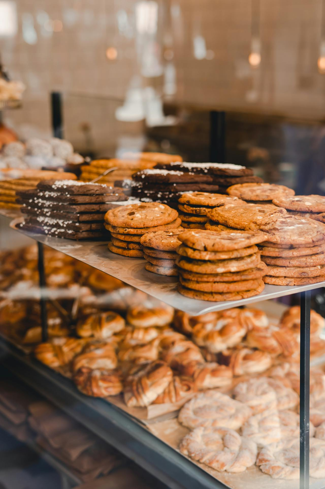

Our Story
At Doughp, we believe in creating moments of joy and indulgence with every scoop of our cookie dough. Starting as a simple idea, we’ve grown into a community that shares a love for safe-to-eat, gourmet cookie dough.
What Makes Us Special?
- High-Quality Ingredients: From heat-treated flour to premium chocolate, we prioritize quality in every batch.
- Safe to Eat: With no raw eggs and heat-treated flour, our cookie dough is designed for worry-free indulgence.
- Versatility: Enjoy it straight from the tub, bake it into cookies, or use it in your favorite dessert recipes.
- Community Impact: A portion of every purchase supports charitable organizations focused on mental health and food security.
Why Choose Doughp?
Whether you’re looking for a sweet treat to enjoy on your own or a unique dessert to share with loved ones, Doughp has something for everyone. Here’s why our cookie dough stands out:
- Gourmet Flavors: From classic chocolate chip to unique seasonal offerings, we have flavors to satisfy every craving.
- Dietary Options: We offer vegan and gluten-free options, ensuring everyone can enjoy our products.
- Portion Control: With recommended serving sizes, you can indulge without overindulging.
- Freshness Guaranteed: Our cookie dough is made fresh and delivered straight to your door.

EXPLORE OUR IRRESISTIBLE FLAVORS
At Doughp, we take pride in our diverse range of flavors, each crafted to tantalize your taste buds. Here are some of our most popular offerings:
- CHOCOLATE CHIP COOKIE DOUGH: The classic flavor that started it all! Our chocolate chip cookie dough is a timeless favorite, featuring rich chocolate chips nestled in a creamy, buttery base. It’s the ultimate comfort food that never goes out of style.
- BROWNIE BATTER: For those who can’t resist the allure of brownies, our brownie batter cookie dough is a must-try. With its fudgy texture and rich chocolate flavor, it’s like indulging in a decadent brownie without the baking!
- SNICKERDOODLE: Cinnamon lovers rejoice! Our snickerdoodle cookie dough combines the warm, comforting flavors of cinnamon and sugar, creating a delightful treat that’s perfect for any occasion.
- PEANUT BUTTER CUP: If you’re a fan of peanut butter, this flavor is for you! Our peanut butter cup cookie dough is packed with creamy peanut butter and chocolate chunks, delivering a sweet and salty experience that’s simply irresistible.
- BIRTHDAY CAKE: Celebrate every day like it’s your birthday with our birthday cake cookie dough! Bursting with colorful sprinkles and a sweet vanilla flavor, it’s a festive treat that brings joy to any moment.
JOIN THE DOUGHP COMMUNITY
At Doughp, we’re more than just a gourmet cookie dough company; we’re a community of dessert lovers who share a passion for all things sweet. We invite you to join us on this delicious journey! Follow us on social media for the latest updates, mouthwatering recipes, and exclusive promotions.
SHARE YOUR DOUGHP MOMENTS
We love seeing how you enjoy our cookie dough! Tag us in your photos and use #DoughpMoments to share your favorite ways to indulge. Whether you’re enjoying it solo or sharing with friends, we want to celebrate your sweet moments with you.
ORDER YOUR DOUGHP TODAY!
Ready to treat yourself? Ordering from Doughp is easy! Browse our selection of flavors, choose your favorites, and have them delivered right to your door. With our commitment to quality and flavor, you can trust that you’re getting the best cookie dough available.
SPECIAL OFFERS
Don’t forget to check out our special offers and subscription options for regular deliveries of your favorite cookie dough. Indulge in the joy of having gourmet cookie dough on hand whenever the craving strikes!
INDULGE IN THE DOUGHP EXPERIENCE
At Doughp, we’re dedicated to creating the ultimate edible cookie dough experience. With our rich flavors, high-quality ingredients, and commitment to safety, we’re proud to be your go-to source for gourmet cookie dough. Whether you’re treating yourself or sharing with loved ones, Doughp is here to make every moment a little sweeter.
So go ahead, dive into a tub of Doughp and discover why we’re the gourmet cookie dough company that dessert lovers can’t get enough of. Your taste buds will thank you!